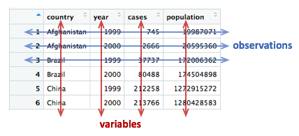
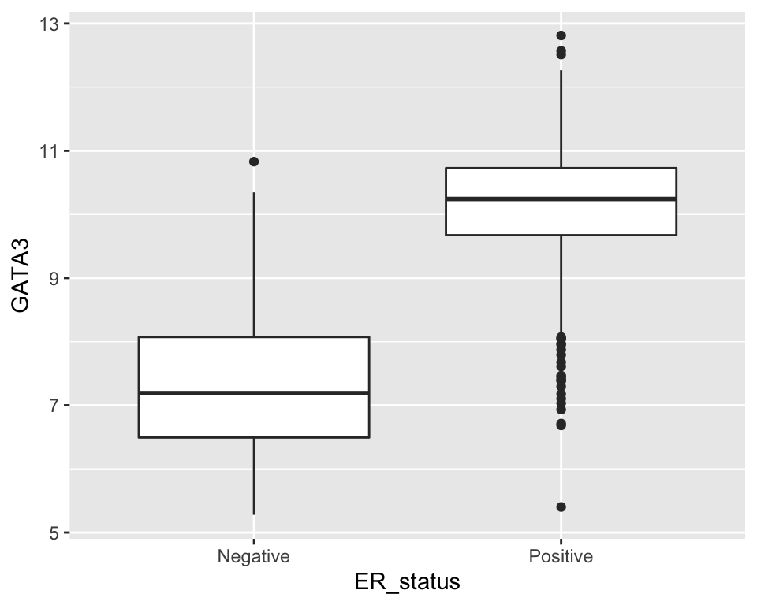
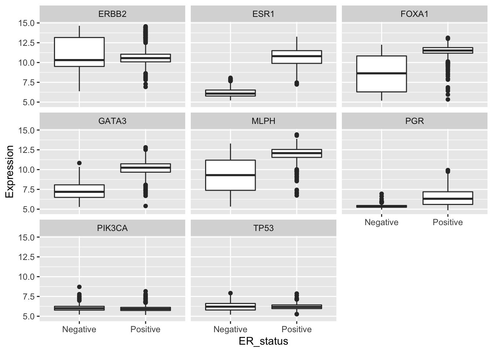
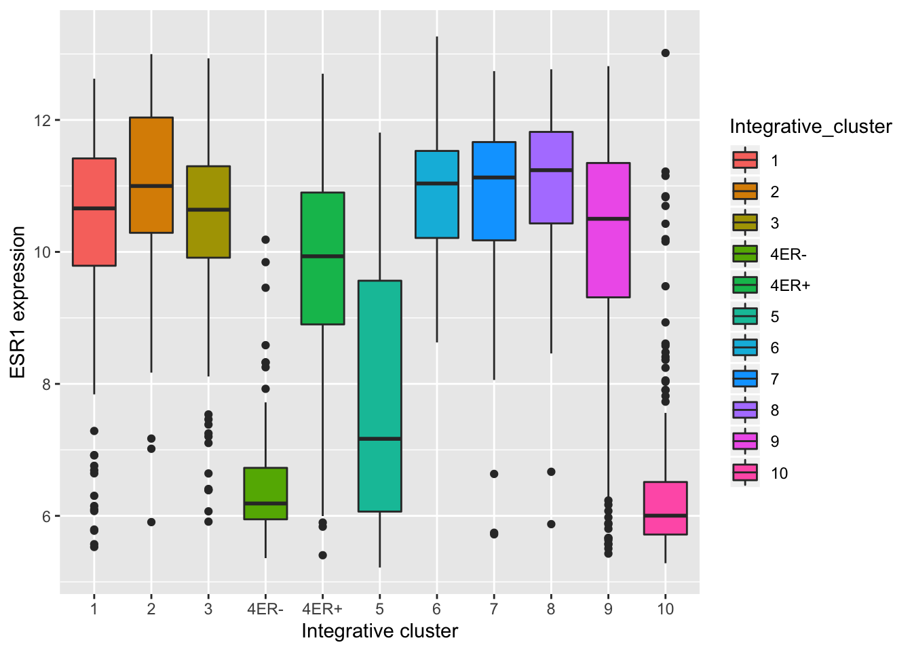
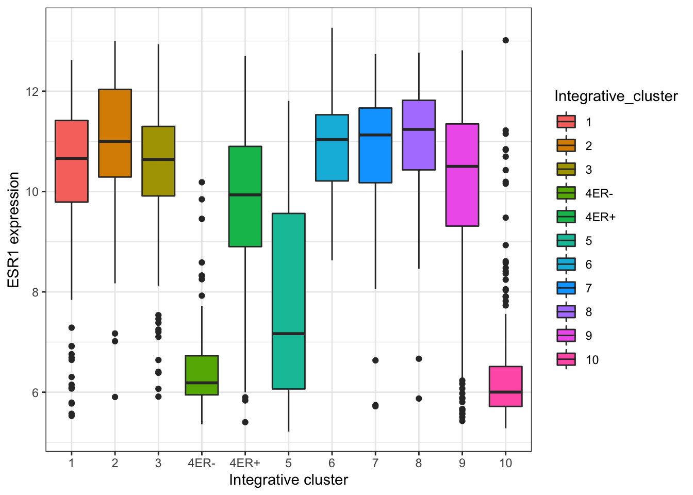
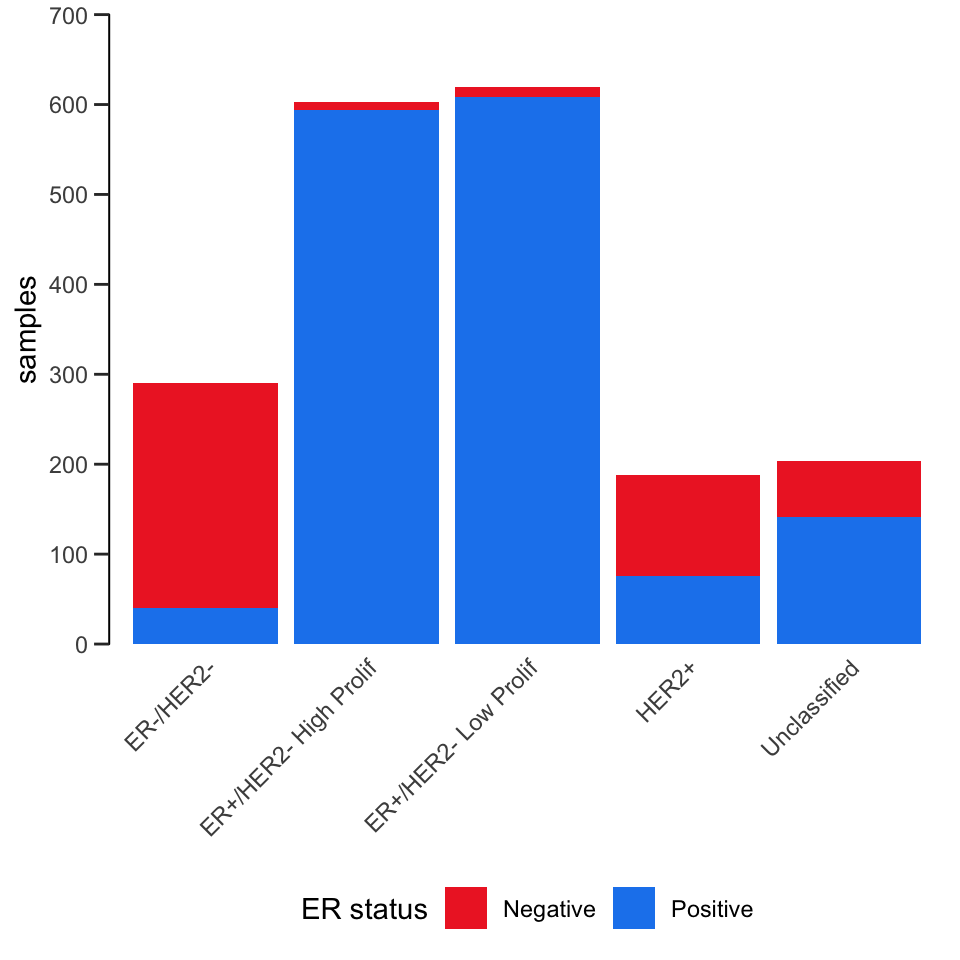
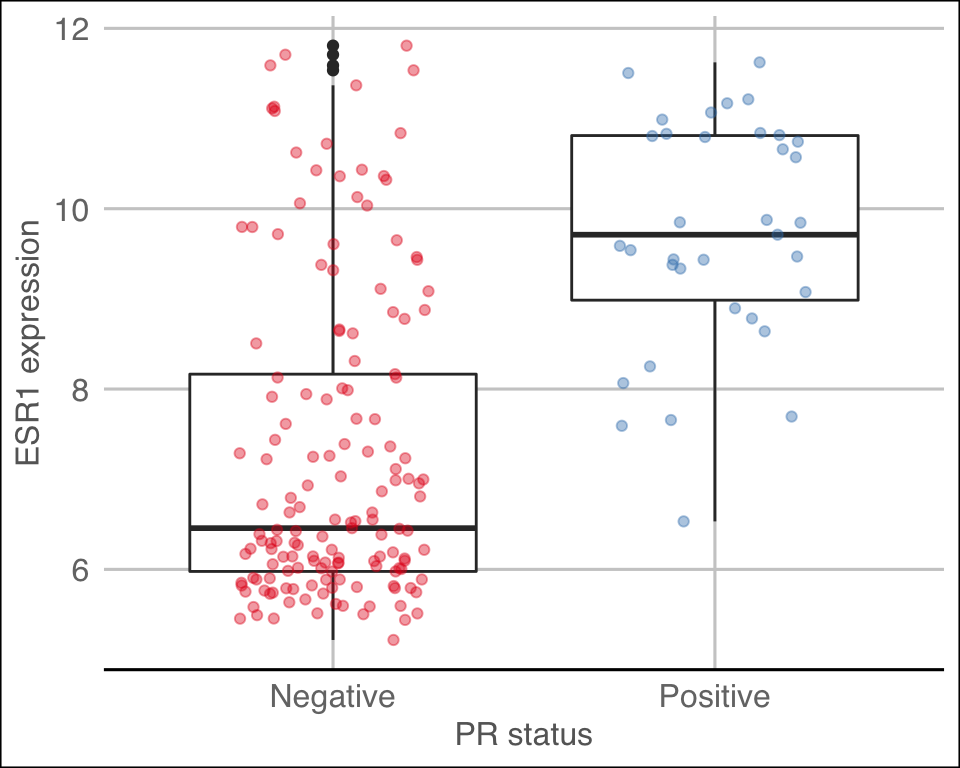
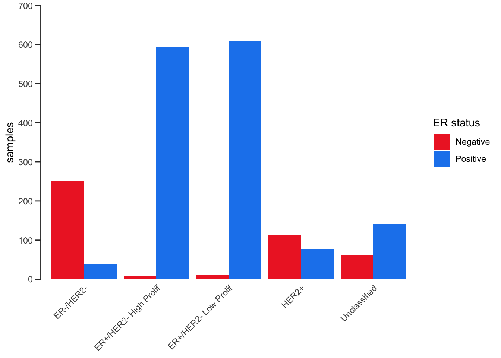
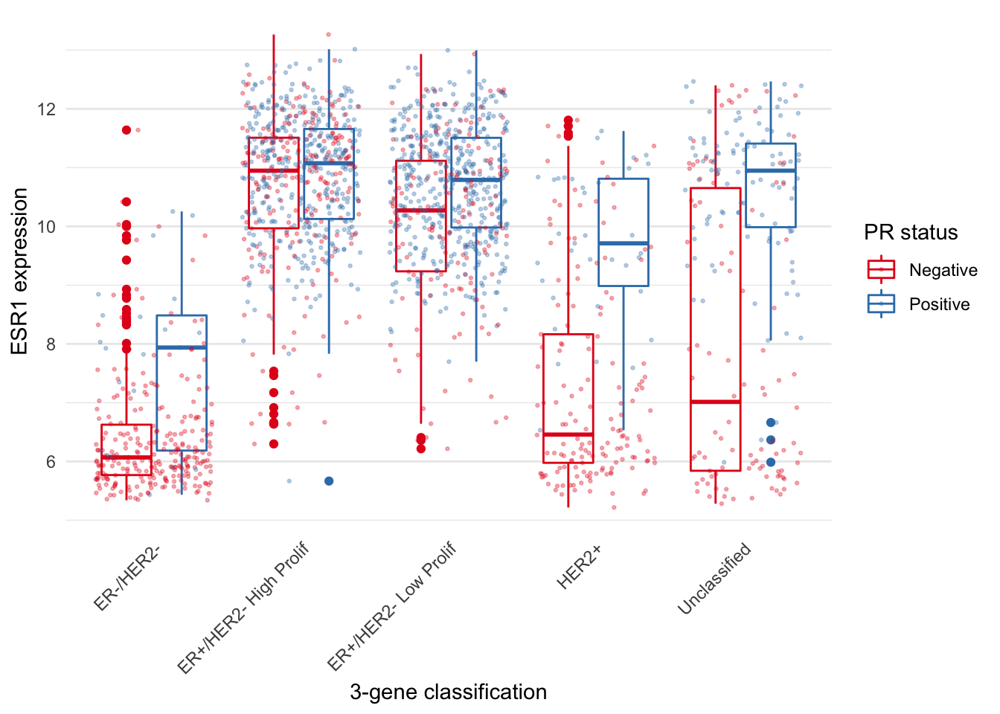
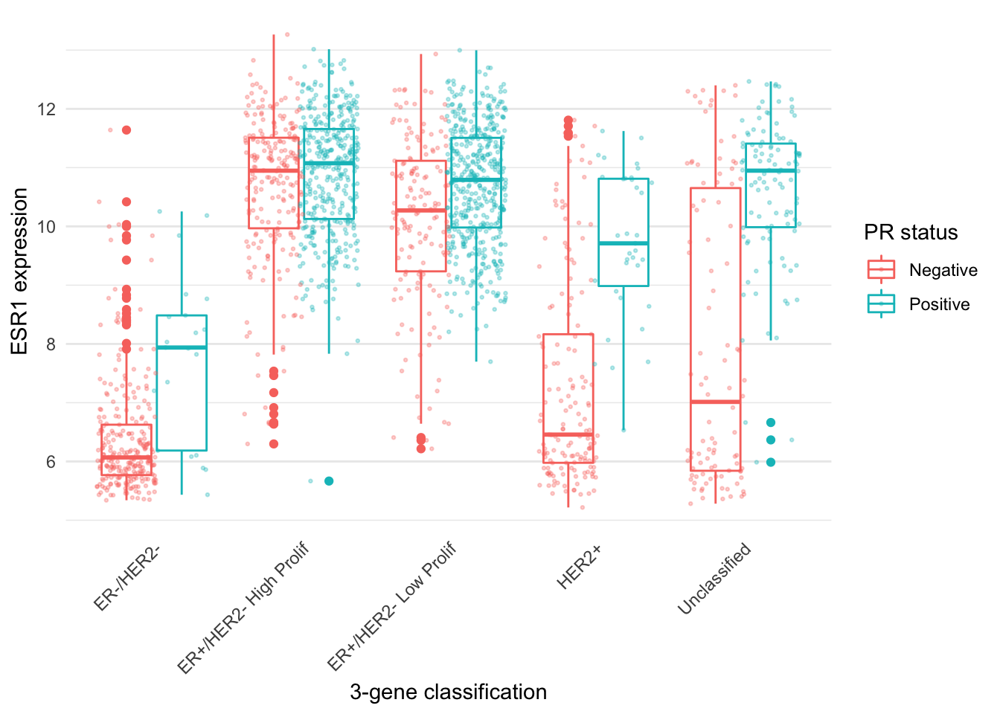

Week 6 – Restructuring data for analysis
Learning objectives
- Understand what makes a data set ‘tidy’ and why you’d want your data to be structured this way
- Use
pivot_longer()andpivot_wider()operations to restructure data frames- Tease apart columns containing multiple variables using
separate()- Modify character variables using string manipulation functions from the stringr package
- Customize non-data components of plots created using ggplot2 by changing the theme
Restructuring data
The data you collect or obtain from a third party is not always in a form that is suitable for exploratory analysis and visualization and may need to be restructured before you can fully make use of it.
This is particularly true of the plotting and summarizing tools we’ve been looking at in this course, which are designed specifically to work on data in a format referred to as ‘tidy’. This is where the tidyverse gets its name.
In this session, we will look at what it means for data to be ‘tidy’ and how you can transform your data, if necessary, into this form. We’ll also look at useful functions for handling compound variables, that is columns that contain more than one type of measurement or attribute (you’d be surprised how common this is) and some of the string manipulation functions from the stringr package that can help with cleaning up values within a data frame.
Finally, we’ll take another look at customizing plots created with ggplot2 by changing various non-data components that are largely cosmetic.
The functions we’re mostly focusing on in this session are from the tidyr and stringr packages both of which get loaded as part of the tidyverse.
library(tidyverse)Tidy data
So what is ‘tidy data’ and why should we care about it?
To answer these questions, we’ll look at different ways in which a simple data set can be represented and consider the challenges associated with each. The data set in question is a subset of data from the World Health Organization Global Tuberculosis Report.
The tidyr package contains a series of tibbles that represent the same set of information on the number of new cases of tuberculosis (TB) recorded in each of 3 countries in the years 1999 and 2000 as well as the populations of those countries.
Here is the first table, table1, that contains a row for every combination of country and year and separate columns containing the numbers of TB cases and the population.
table1## # A tibble: 6 x 4
## country year cases population
## <chr> <int> <int> <int>
## 1 Afghanistan 1999 745 19987071
## 2 Afghanistan 2000 2666 20595360
## 3 Brazil 1999 37737 172006362
## 4 Brazil 2000 80488 174504898
## 5 China 1999 212258 1272915272
## 6 China 2000 213766 1280428583Two alternative ways of representing the same information are given in table2 and table3. We’ll consider each of these in turn, shortly.
table2## # A tibble: 12 x 4
## country year type count
## <chr> <int> <chr> <int>
## 1 Afghanistan 1999 cases 745
## 2 Afghanistan 1999 population 19987071
## 3 Afghanistan 2000 cases 2666
## 4 Afghanistan 2000 population 20595360
## 5 Brazil 1999 cases 37737
## 6 Brazil 1999 population 172006362
## 7 Brazil 2000 cases 80488
## 8 Brazil 2000 population 174504898
## 9 China 1999 cases 212258
## 10 China 1999 population 1272915272
## 11 China 2000 cases 213766
## 12 China 2000 population 1280428583table3## # A tibble: 6 x 3
## country year rate
## * <chr> <int> <chr>
## 1 Afghanistan 1999 745/19987071
## 2 Afghanistan 2000 2666/20595360
## 3 Brazil 1999 37737/172006362
## 4 Brazil 2000 80488/174504898
## 5 China 1999 212258/1272915272
## 6 China 2000 213766/1280428583The final representation has the data split across two tables, a scenario that is actually quite likely given that population data will almost certainly have been collected separately from the recording of TB cases.
table4a## # A tibble: 3 x 3
## country `1999` `2000`
## * <chr> <int> <int>
## 1 Afghanistan 745 2666
## 2 Brazil 37737 80488
## 3 China 212258 213766table4b## # A tibble: 3 x 3
## country `1999` `2000`
## * <chr> <int> <int>
## 1 Afghanistan 19987071 20595360
## 2 Brazil 172006362 174504898
## 3 China 1272915272 1280428583Time series data like this are very commonly represented as they are in table4a and table4b with a series of dates or years as columns extending across a spreadsheet. You will find numerous examples of this if you seek out various data sets made available by the UK Office for National Statistics and various other national and international organizations.
Tables 1 to 4 are all different representations of the same underlying data but one of these tables is structured in such a way as to be most readily used in the tidyverse.
Rules for tidy data
Tidy data
A tidy data set is a data frame (or table) for which the following are true:
- Each variable has its own column
- Each observation has its own row
- Each value has its own cell

A variable contains all values that measure the same underlying attribute (like height, temperature, duration) across units.
An observation contains all values measured on the same unit (like a person or a day) across attributes.
From ‘Tidy Data’ by Hadley Wickham.
Question: Which of the above representations of TB cases is tidy?
Another way of framing the question is to consider what are the variables in the TB data set, i.e. what are the things that vary and for which we can attach a value for each observation?
Take another look at tables 4a and 4b. Do each of the columns correspond to a variable? The country is certainly a variable. In this data set it takes one of three values: Afghanistan, Brazil or China.
But what about the other two columns, ‘1999’ and ‘2000’? These are values, not variables. The variable in this case would be ‘year’ and could take a value of 1999 or 2000. Tables 4a and 4b are not tidy.
There is also another rather obvious problem with tables 4a and 4b – the data are contained in two separate data frames. The data would almost certainly have been collected separately, so it’s hardly surprising, but whenever numbers of people affected by a disease, or engaging in an activity, are compared between countries we almost always want to be comparing the rate (the percentage within the population) and not the absolute number, so that the comparison is fair. We need to combine the data from these two tables in order to calculate the rate.
The only table that is truly tidy is table1. It contains one column for each of the variables in the data set, namely country, year, the number of new TB cases and the population. We’ll look at tables 2 and 3 shortly and why these aren’t tidy and what we can do about it, but first we’ll see how we can convert tables 4a and 4b into the tidy format.
Pivoting operations
pivot_longer()
Tables 4a and 4b are examples of what is often referred to as ‘wide format’. While neither table looks especially wide, you can imagine that the more complete WHO data set contains data for very many years and that if each had its own column, the table would be very much wider.
What we need is a column for ‘year’ so that we have a count, whether it is the number of TB cases or the population, for each unique combination of country and year. Transforming the table in this way is known as ‘pivoting’ and the tidyr package provides the pivot_longer() function for just such an operation.
table4a## # A tibble: 3 x 3
## country `1999` `2000`
## * <chr> <int> <int>
## 1 Afghanistan 745 2666
## 2 Brazil 37737 80488
## 3 China 212258 213766table4a_long <- pivot_longer(table4a, c(`1999`, `2000`), names_to = "year", values_to = "cases")
table4a_long## # A tibble: 6 x 3
## country year cases
## <chr> <chr> <int>
## 1 Afghanistan 1999 745
## 2 Afghanistan 2000 2666
## 3 Brazil 1999 37737
## 4 Brazil 2000 80488
## 5 China 1999 212258
## 6 China 2000 213766As with almost all tidyverse operations the first argument is the data frame we’re working on. The second specifies which columns we are operating on. Here we’ve used a vector with c() but it is also quite customary and normally more convenient to use a range of columns, e.g. `1999`:`2000`. Remember that we have to use backticks because R doesn’t like variable names starting with numbers.
Pivoting operations
pivot_longer(data, cols, names_to = “name”, values_to = “value”)
Pivot data from wide to long, increasing the number of rows and decreasing the number of columns.
table4a_long <- pivot_longer(table4a,
1999:2000, names_to = “year”, values_to = “cases”)

pivot_wider(data, names_from = name, values_from = value)
Pivot data from long to wide, increasing the number of columns and decreasing the number of rows.
table4a_wide <- pivot_wider(table4a_long, names_from = “year”, values_from = “cases”)
The names_to and values_to arguments are so called because we are taking the names of the columns we specified (1999 and 2000) and putting these in a new column with a name given by names_to. Likewise, we are taking values in each of our specified columns and putting these in a new column whose name is given by values_to.
We can do the same with table4b and join the two resulting tables together to recreate table1.
table4b_long <- pivot_longer(table4b, c(`1999`, `2000`), names_to = "year", values_to = "population")
table4b_long## # A tibble: 6 x 3
## country year population
## <chr> <chr> <int>
## 1 Afghanistan 1999 19987071
## 2 Afghanistan 2000 20595360
## 3 Brazil 1999 172006362
## 4 Brazil 2000 174504898
## 5 China 1999 1272915272
## 6 China 2000 1280428583left_join(table4a_long, table4b_long, by = c("country", "year"))## # A tibble: 6 x 4
## country year cases population
## <chr> <chr> <int> <int>
## 1 Afghanistan 1999 745 19987071
## 2 Afghanistan 2000 2666 20595360
## 3 Brazil 1999 37737 172006362
## 4 Brazil 2000 80488 174504898
## 5 China 1999 212258 1272915272
## 6 China 2000 213766 1280428583pivot_wider()
pivot_wider() has the opposite effect of pivot_longer() and can be used to reverse the pivoting operation we just performed on table4a.
pivot_wider(table4a_long, names_from = "year", values_from = "cases")## # A tibble: 3 x 3
## country `1999` `2000`
## <chr> <int> <int>
## 1 Afghanistan 745 2666
## 2 Brazil 37737 80488
## 3 China 212258 213766In some cases the wide format is the more human-readable form and usually it is a more compact way of representing the data. In this example, there is no duplication of the year value in the wide format of table4a and table4b. We will see later that this is much more apparent with larger data tables, e.g. gene expression matrices.
Let’s look again at table2.
table2## # A tibble: 12 x 4
## country year type count
## <chr> <int> <chr> <int>
## 1 Afghanistan 1999 cases 745
## 2 Afghanistan 1999 population 19987071
## 3 Afghanistan 2000 cases 2666
## 4 Afghanistan 2000 population 20595360
## 5 Brazil 1999 cases 37737
## 6 Brazil 1999 population 172006362
## 7 Brazil 2000 cases 80488
## 8 Brazil 2000 population 174504898
## 9 China 1999 cases 212258
## 10 China 1999 population 1272915272
## 11 China 2000 cases 213766
## 12 China 2000 population 1280428583Are the type and count columns true variables? And what is the observational unit in this case?
If we consider the observational unit to be a country in a specific year then table2 is not tidy because observations are split across two rows. Also the count variable contains counts of what are essentially different things, the number of cases of TB or the total population.
In tricky situations like this, a tell-tale sign that the data is not in a tidy format is when we attempt to perform some exploratory data analysis and visualization and find we’re having to do quite a bit of work to calculate or plot what we want.
For example, if we wanted to create a bar plot of the numbers of TB cases in each country, we would have to first remove the rows corresponding to the populations using a filter operation. Surely that wouldn’t be necessary if the data were tidy.
Similarly, the rate of new TB cases, i.e. the proportion of the population infected with TB, is something we should be able to calculate easily in a simple operation. However, this is actually quite difficult to do with the data structured as they are in table2.
We can use pivot_wider() to sort this out. The type column contains the variable names so we’d need to set names_from = "type", while the values will be taken from the count column.
table2_fixed <- pivot_wider(table2, names_from = "type", values_from = "count")
table2_fixed## # A tibble: 6 x 4
## country year cases population
## <chr> <int> <int> <int>
## 1 Afghanistan 1999 745 19987071
## 2 Afghanistan 2000 2666 20595360
## 3 Brazil 1999 37737 172006362
## 4 Brazil 2000 80488 174504898
## 5 China 1999 212258 1272915272
## 6 China 2000 213766 1280428583The resulting table is exactly the same as table1 and now the rate of infection can be calculated rather straightforwardly.
mutate(table2_fixed, rate = cases / population)## # A tibble: 6 x 5
## country year cases population rate
## <chr> <int> <int> <int> <dbl>
## 1 Afghanistan 1999 745 19987071 0.0000373
## 2 Afghanistan 2000 2666 20595360 0.000129
## 3 Brazil 1999 37737 172006362 0.000219
## 4 Brazil 2000 80488 174504898 0.000461
## 5 China 1999 212258 1272915272 0.000167
## 6 China 2000 213766 1280428583 0.000167Splitting columns
Table 3 contains an example of a column that contains multiple values. It is a somewhat convoluted example but occasionally you may come across data like this.
table3## # A tibble: 6 x 3
## country year rate
## * <chr> <int> <chr>
## 1 Afghanistan 1999 745/19987071
## 2 Afghanistan 2000 2666/20595360
## 3 Brazil 1999 37737/172006362
## 4 Brazil 2000 80488/174504898
## 5 China 1999 212258/1272915272
## 6 China 2000 213766/1280428583The rate column contains both the number of TB cases and the population separated by a ‘/’ character. The rate column is a character type so not terribly useful for doing anything of a mathematical nature in its current guise.
separate()
The separate() function allows us to split a character column into multiple columns based on a delimiter or separator.
table3_separated <- separate(table3, rate, into = c("cases", "population"), sep = "/")
table3_separated## # A tibble: 6 x 4
## country year cases population
## <chr> <int> <chr> <chr>
## 1 Afghanistan 1999 745 19987071
## 2 Afghanistan 2000 2666 20595360
## 3 Brazil 1999 37737 172006362
## 4 Brazil 2000 80488 174504898
## 5 China 1999 212258 1272915272
## 6 China 2000 213766 1280428583The sep argument takes a regular expression that defines how to split the values. We’ve mentioned regular expressions before – they are a language for specifying search patterns used to find sequences of characters within text and well worth learning. In this case our separator is just the ‘/’ character.
The resulting data frame is still not quite what we want though. This becomes apparent as soon as we try to do anything with the new cases and population columns.
mutate(table3_separated, rate = cases / population)## Error in cases/population: non-numeric argument to binary operatorBy default the separated values are character types. We could convert these using mutate_at().
mutate_at(table3_separated, vars(cases, population), as.integer)## # A tibble: 6 x 4
## country year cases population
## <chr> <int> <int> <int>
## 1 Afghanistan 1999 745 19987071
## 2 Afghanistan 2000 2666 20595360
## 3 Brazil 1999 37737 172006362
## 4 Brazil 2000 80488 174504898
## 5 China 1999 212258 1272915272
## 6 China 2000 213766 1280428583But another option is to specify convert = TRUE when carrying out the separate() operation, in which case it will deduce the type of the values and convert the column accordingly.
table3_separated <- separate(table3, rate, into = c("cases", "population"), sep = "/", convert = TRUE)
mutate(table3_separated, rate = cases / population)## # A tibble: 6 x 5
## country year cases population rate
## <chr> <int> <int> <int> <dbl>
## 1 Afghanistan 1999 745 19987071 0.0000373
## 2 Afghanistan 2000 2666 20595360 0.000129
## 3 Brazil 1999 37737 172006362 0.000219
## 4 Brazil 2000 80488 174504898 0.000461
## 5 China 1999 212258 1272915272 0.000167
## 6 China 2000 213766 1280428583 0.000167Example 1: METABRIC gene expression
Although tables 1 to 4 contain real data they are, of course, ‘toy’ data frames created for demonstration and teaching purposes. We’ll now turn our attention to the METABRIC expression data and see how this needs to be transformed into a tidier format to open up different avenues for exploring the data.
We’ll first load the table and then select just the columns we’re going to need.
metabric <- read_csv("data/metabric_clinical_and_expression_data.csv") %>%
select(Patient_ID, ER_status, ESR1:MLPH)
metabric## # A tibble: 1,904 x 10
## Patient_ID ER_status ESR1 ERBB2 PGR TP53 PIK3CA GATA3 FOXA1 MLPH
## <chr> <chr> <dbl> <dbl> <dbl> <dbl> <dbl> <dbl> <dbl> <dbl>
## 1 MB-0000 Positive 8.93 9.33 5.68 6.34 5.70 6.93 7.95 9.73
## 2 MB-0002 Positive 10.0 9.73 7.51 6.19 5.76 11.3 11.8 12.5
## 3 MB-0005 Positive 10.0 9.73 7.38 6.40 6.75 9.29 11.7 10.3
## 4 MB-0006 Positive 10.4 10.3 6.82 6.87 7.22 8.67 11.9 10.5
## 5 MB-0008 Positive 11.3 9.96 7.33 6.34 5.82 9.72 11.6 12.2
## 6 MB-0010 Positive 11.2 9.74 5.95 5.42 6.12 9.79 12.1 11.4
## 7 MB-0014 Positive 10.8 9.28 7.72 5.99 7.48 8.37 11.5 10.8
## 8 MB-0022 Positive 10.4 8.61 5.59 6.17 7.59 7.87 10.7 9.95
## 9 MB-0028 Positive 12.5 10.7 5.33 6.22 6.25 10.3 12.1 10.9
## 10 MB-0035 Positive 7.54 11.5 5.59 6.41 5.99 10.2 12.8 13.5
## # … with 1,894 more rowsWhen we first looked at visualization using ggplot2 we created the following box plot.
ggplot(metabric) +
geom_boxplot(mapping = aes(x = ER_status, y = GATA3))
But what if we would like to create a series of plots using the faceting functions in ggplot2 with one plot for each gene?
Faceting requires a categorical variable, which is used to divide the data into subsets to be used for each plot. In this case we’d need a gene column. Clearly our data are not structured in this way.
We have gene names for column headings. Are these variables? Well, maybe, although a more correct name for each of these variables or column headings would be ‘Expression of ESR1’, ‘Expression of ERBB2’, etc.
But we could consider that these gene column headings are actually values of a variable called ‘gene’ or ‘gene symbol’. In this regard, what we have is a ‘wide format’ table.
Most gene expression matrices have a similar form, although usually there have rows for each gene and columns for each sample. It should be said that the gene expression matrix format is a very compact way of representing the data which could be a consideration when dealing with tens of thousands of genes and anywhere between a few tens of samples to a few thousand, such is the case for METABRIC.
Furthermore, there are lots of tools for working with gene expression data in the form of matrices, including many packages in the Bioconductor project. Fortunately, as we’ve seen, pivot_longer() and pivot_wider() provide a very convenient means of converting between tidy and matrix-like formats.
We’ll convert our table of ER status and gene expression data to the tidy format.
metabric <- pivot_longer(metabric, ESR1:MLPH, names_to = "Gene", values_to = "Expression")
metabric## # A tibble: 15,232 x 4
## Patient_ID ER_status Gene Expression
## <chr> <chr> <chr> <dbl>
## 1 MB-0000 Positive ESR1 8.93
## 2 MB-0000 Positive ERBB2 9.33
## 3 MB-0000 Positive PGR 5.68
## 4 MB-0000 Positive TP53 6.34
## 5 MB-0000 Positive PIK3CA 5.70
## 6 MB-0000 Positive GATA3 6.93
## 7 MB-0000 Positive FOXA1 7.95
## 8 MB-0000 Positive MLPH 9.73
## 9 MB-0002 Positive ESR1 10.0
## 10 MB-0002 Positive ERBB2 9.73
## # … with 15,222 more rowsNote how we specified a range of columns between ESR1 and MLPH, which is a lot easier than naming each column individually.
We’re now in a position to create our faceted box plot chart.
ggplot(data = metabric) +
geom_boxplot(mapping = aes(x = ER_status, y = Expression)) +
facet_wrap(vars(Gene))
In carrying out this transformation, the observational unit has changed. The tidy format has one-row-per-gene-per-sample, while wide format was one-row-per-sample. The tidy format is much less compact and involves considerable duplication of values in the first three columns (Patient_ID, ER_status and Gene).
One of the other plot types we’ve used in exploring these data was a scatter plot comparing the expression of two genes across all the samples. For this, the one-row-per-sample representation is the more appropriate and being able to convert back to this format allows us to create the plot.
metabric %>%
pivot_wider(names_from = "Gene", values_from = "Expression") %>%
ggplot() +
geom_point(mapping = aes(x = GATA3, y = ESR1, colour = ER_status))
Example 2: Protein levels in MCF-7 after treatment with tamoxifen
Our second real example features another data set generated by CRUK CI scientists (Papachristou et al., Nature Communications 9:2311, 2018) in which the dynamics of endogenous chromatin-associated protein complexes were investigated using quantitative mass spectrometry.
We’ll look at just one of several tabular data sets made available as supplementary data, which contains the total level of protein in MCF-7 cells at various time points after treatment with the drug tamoxifen. MCF-7 is a breast cancer cell line isolated in 1970 from a 69-year old woman and established for use in breast cancer research by the Michigan Cancer Foundation-7 institute in Detroit. Tamoxifen is a hormone therapy used in the treatment of estrogen receptor-positive breast cancer.
The table in question is supplementary data 9.
library(readxl)
protein_levels <- read_excel("data/41467_2018_4619_MOESM11_ESM.xlsx", skip = 1)
select(protein_levels, `Uniprot Accession`, `Gene Name`, ends_with("rep01"))## # A tibble: 7,943 x 6
## `Uniprot Access… `Gene Name` vehicle.rep01 tam.2h.rep01 tam.6h.rep01
## <chr> <chr> <dbl> <dbl> <dbl>
## 1 Q09666 AHNAK 17.3 17.3 17.3
## 2 P05787 KRT8 16.9 17.1 17.0
## 3 Q15149 PLEC 16.7 16.7 16.7
## 4 P21333 FLNA 16.6 16.5 16.6
## 5 P05783 KRT18 16.4 16.6 16.5
## 6 P49327 FASN 16.0 16.0 16.0
## 7 P10809 HSPD1 16.1 16.2 16.1
## 8 Q14204 DYNC1H1 16.0 15.9 16.0
## 9 O75369 FLNB 16.1 16.1 16.2
## 10 P35579 MYH9 15.7 15.6 15.8
## # … with 7,933 more rows, and 1 more variable: tam.24h.rep01 <dbl>This has a very similar structure to a gene expression matrix having one row for each protein (or gene) and a column for each sample. We’ve only shown columns for the first of four replicates for each group defined by a treatment and a time point. The control group is, in effect, the ‘untreated’ group in which the cells are treated with the vehicle (ethanol) alone.
If we wanted to calculate the mean protein levels within each group, i.e. the average level for the protein measured in the 4 replicates, or we wanted to show the spread of values for the replicates as a box plot, then the data as currently structured is not in the most suitable form. In what follows, we’ll transform the table to allow us to do both these analyses.
To simplify matters, we’re going to focus on just a few proteins, those whose levels are markedly reduced 24 hours after treatment with tamoxifen compared with the vehicle.
protein_levels <- protein_levels %>%
filter(`log2FC(24h/veh)` < -0.75) %>%
select(accession = `Uniprot Accession`, gene = `Gene Name`, vehicle.rep01:tam.24h.rep04)
protein_levels## # A tibble: 10 x 18
## accession gene vehicle.rep01 tam.2h.rep01 tam.6h.rep01 tam.24h.rep01
## <chr> <chr> <dbl> <dbl> <dbl> <dbl>
## 1 Q4ZG55 GREB1 12.1 12 11.6 9.78
## 2 P15514 AREG 11.4 11.3 11.3 9.92
## 3 Q13433 SLC3… 10.9 10.8 10.7 9.89
## 4 Q9NPD8 UBE2T 10.4 10.3 10.2 9.62
## 5 Q6N021 TET2 10.1 10.0 9.59 8.75
## 6 P06401 PGR 9.97 10.0 9.75 8.75
## 7 P25929 NPY1R 9.08 9.16 8.89 7.94
## 8 O95084 PRSS… 8.45 8.53 8.27 7.78
## 9 P08493 MGP 6.76 6.76 6.18 5.09
## 10 Q96BR1 SGK3 6.33 6.42 6.16 5.5
## # … with 12 more variables: vehicle.rep02 <dbl>, tam.2h.rep02 <dbl>,
## # tam.6h.rep02 <dbl>, tam.24h.rep02 <dbl>, vehicle.rep03 <dbl>,
## # tam.2h.rep03 <dbl>, tam.6h.rep03 <dbl>, tam.24h.rep03 <dbl>,
## # vehicle.rep04 <dbl>, tam.2h.rep04 <dbl>, tam.6h.rep04 <dbl>,
## # tam.24h.rep04 <dbl>This is a fairly typical example of a table with columns for each sample where the sample names contain quite a lot of information, in this case:
- the treatment
- the time at which the protein levels are measured after treatment
- the number of the replicate sample for that treatment and time point
To make use of this information we need to pivot the table such that the sample name is in a column and protein levels are in another column, and then to split the sample name column into its constituent parts.
For the first part of this transformation we’ll use pivot_longer().
protein_levels <- pivot_longer(protein_levels, vehicle.rep01:tam.24h.rep04, names_to = "sample", values_to = "protein_level")
protein_levels## # A tibble: 160 x 4
## accession gene sample protein_level
## <chr> <chr> <chr> <dbl>
## 1 Q4ZG55 GREB1 vehicle.rep01 12.1
## 2 Q4ZG55 GREB1 tam.2h.rep01 12
## 3 Q4ZG55 GREB1 tam.6h.rep01 11.6
## 4 Q4ZG55 GREB1 tam.24h.rep01 9.78
## 5 Q4ZG55 GREB1 vehicle.rep02 11.3
## 6 Q4ZG55 GREB1 tam.2h.rep02 11.4
## 7 Q4ZG55 GREB1 tam.6h.rep02 11.1
## 8 Q4ZG55 GREB1 tam.24h.rep02 8.98
## 9 Q4ZG55 GREB1 vehicle.rep03 11.0
## 10 Q4ZG55 GREB1 tam.2h.rep03 11.0
## # … with 150 more rowsNow we can use separate() to disentangle the components of the sample name.
It looks like we need to split on the ‘.’ character but that has a special meaning in a regular expression, i.e. match any character. Fortunately, the default regular expression used by separate() splits on any character that isn’t a letter or a number, so will do just fine.
But there is another problem. The vehicle sample names don’t follow the pattern of “treatment.time.replicate”. In actual fact the vehicle measurements were taken 24 hours after treatment with ethanol alone. What we should do to correct matters is add the ‘24h’ component. For that, we’re going to use one of several really useful string manipulation functions provided by the stringr package.
Some useful stringr functions
str_c(…, sep = “”)
Join multiple strings into a single string.
str_c(“tidyverse”, “fab”, sep = " is “)
[1] “tidyverse is fab”
str_c(c(“Ashley”, “Matt”), c(“hiking”, “beer”), sep = " loves “)
[1] “Ashley loves hiking” “Matt loves beer”
str_replace(string, pattern, replacement)
str_replace_all(string, pattern, replacement)
Substitute a matched pattern in a string (or character vector).
str_replace(“Oscar is the best cat in the world”, “best”, “loveliest”)
[1] “Oscar is the loveliest cat in the world”
str_replace_all(“the cat sat on the mat”, “at”, “AT”)
[1] “the cAT sAT on the mAT”
str_remove(string, pattern)
str_remove_all(string, pattern)
Remove matched patterns in a string.
Alias for str_replace(string, pattern, “”) and str_replace_all(string, pattern, “”).
str_sub(string, start, end)
Extract substrings from a character vector at the given start and end positions.
str_sub(“Matthew”, start = 1, end = 4)
[1] “Matt”
str_sub(c(“tamoxifen”, “vehicle”), 1, 3)
[1] “tam” “veh”
str_replace() looks like the function we need so let’s see how it works on our sample names.
str_replace("vehicle.rep01", "vehicle", "vehicle.24h")## [1] "vehicle.24h.rep01"The first argument is the character vector we’re working on, in this case a single character string. The second argument is the pattern or substring we want to replace and the third is the string we want to replace it with.
Looking at the help we can see that, like very many R functions, it works on a vector of character values (or strings), so let’s try this on a few of our sample names, say the first 10.
str_replace(protein_levels$sample[1:10], "vehicle", "vehicle.24h")## [1] "vehicle.24h.rep01" "tam.2h.rep01" "tam.6h.rep01"
## [4] "tam.24h.rep01" "vehicle.24h.rep02" "tam.2h.rep02"
## [7] "tam.6h.rep02" "tam.24h.rep02" "vehicle.24h.rep03"
## [10] "tam.2h.rep03"Finally, we can modify the values in our data frame using mutate().
protein_levels <- mutate(protein_levels, sample = str_replace(sample, "vehicle", "vehicle.24h"))
protein_levels## # A tibble: 160 x 4
## accession gene sample protein_level
## <chr> <chr> <chr> <dbl>
## 1 Q4ZG55 GREB1 vehicle.24h.rep01 12.1
## 2 Q4ZG55 GREB1 tam.2h.rep01 12
## 3 Q4ZG55 GREB1 tam.6h.rep01 11.6
## 4 Q4ZG55 GREB1 tam.24h.rep01 9.78
## 5 Q4ZG55 GREB1 vehicle.24h.rep02 11.3
## 6 Q4ZG55 GREB1 tam.2h.rep02 11.4
## 7 Q4ZG55 GREB1 tam.6h.rep02 11.1
## 8 Q4ZG55 GREB1 tam.24h.rep02 8.98
## 9 Q4ZG55 GREB1 vehicle.24h.rep03 11.0
## 10 Q4ZG55 GREB1 tam.2h.rep03 11.0
## # … with 150 more rowsNow we’re ready to separate the sample column into its component parts.
protein_levels <- separate(protein_levels, sample, into = c("treatment", "time", "replicate"))
protein_levels## # A tibble: 160 x 6
## accession gene treatment time replicate protein_level
## <chr> <chr> <chr> <chr> <chr> <dbl>
## 1 Q4ZG55 GREB1 vehicle 24h rep01 12.1
## 2 Q4ZG55 GREB1 tam 2h rep01 12
## 3 Q4ZG55 GREB1 tam 6h rep01 11.6
## 4 Q4ZG55 GREB1 tam 24h rep01 9.78
## 5 Q4ZG55 GREB1 vehicle 24h rep02 11.3
## 6 Q4ZG55 GREB1 tam 2h rep02 11.4
## 7 Q4ZG55 GREB1 tam 6h rep02 11.1
## 8 Q4ZG55 GREB1 tam 24h rep02 8.98
## 9 Q4ZG55 GREB1 vehicle 24h rep03 11.0
## 10 Q4ZG55 GREB1 tam 2h rep03 11.0
## # … with 150 more rowsThe groups we want to compare are in fact the combination of the treatment and the time point. We’ll create a new column called ‘group’ in which we concatenate the treatment and time values using another stringr function, str_c(). But we’ll also shorten ‘vehicle’ to ‘veh’ so we have similar length treatment labels (‘veh’ and ‘tam’) in the plot we’ll eventually create. For that we’ll use str_sub(). Our group variable is categorical so we’ll convert this to a factor while we’re at it.
protein_levels <- protein_levels %>%
mutate(group = str_sub(treatment, 1, 3)) %>%
mutate(group = str_c(group, time)) %>%
mutate(group = as_factor(group))
protein_levels## # A tibble: 160 x 7
## accession gene treatment time replicate protein_level group
## <chr> <chr> <chr> <chr> <chr> <dbl> <fct>
## 1 Q4ZG55 GREB1 vehicle 24h rep01 12.1 veh24h
## 2 Q4ZG55 GREB1 tam 2h rep01 12 tam2h
## 3 Q4ZG55 GREB1 tam 6h rep01 11.6 tam6h
## 4 Q4ZG55 GREB1 tam 24h rep01 9.78 tam24h
## 5 Q4ZG55 GREB1 vehicle 24h rep02 11.3 veh24h
## 6 Q4ZG55 GREB1 tam 2h rep02 11.4 tam2h
## 7 Q4ZG55 GREB1 tam 6h rep02 11.1 tam6h
## 8 Q4ZG55 GREB1 tam 24h rep02 8.98 tam24h
## 9 Q4ZG55 GREB1 vehicle 24h rep03 11.0 veh24h
## 10 Q4ZG55 GREB1 tam 2h rep03 11.0 tam2h
## # … with 150 more rowsComputing the mean protein levels within each group is now very straightforward.
protein_levels %>%
group_by(accession, gene, group) %>%
summarize(protein_level = mean(protein_level))## # A tibble: 40 x 4
## # Groups: accession, gene [10]
## accession gene group protein_level
## <chr> <chr> <fct> <dbl>
## 1 O95084 PRSS23 veh24h 8.16
## 2 O95084 PRSS23 tam2h 8.2
## 3 O95084 PRSS23 tam6h 8.03
## 4 O95084 PRSS23 tam24h 7.20
## 5 P06401 PGR veh24h 9.44
## 6 P06401 PGR tam2h 9.66
## 7 P06401 PGR tam6h 9.41
## 8 P06401 PGR tam24h 8.39
## 9 P08493 MGP veh24h 5.59
## 10 P08493 MGP tam2h 5.69
## # … with 30 more rowsPlotting the protein levels in each group as box plots with each data point overlaid is only slightly more involved. We can use faceting to create separate plots for each of the proteins (we’ll use gene symbols as they’re more recognizable).
ggplot(data = protein_levels, mapping = aes(x = group, y = protein_level)) +
geom_boxplot(colour = "grey60") +
geom_jitter(width = 0.15) +
facet_wrap(vars(gene), scales = "free_y", ncol = 3)
Further customization of plots with ggplot2
Finally, we’ll turn our attention back to visualization using ggplot2 and how we can customize our plots by changing the theme and consider various other odds and ends.
Themes
Themes can be used to customize non-data components of a plot. Let’s create a plot showing the expression of estrogen receptor alpha (ESR1) for each of the Integrative cluster breast cancer subtypes.
# read in the METABRIC data, convert the Integrative_cluster variable into a
# categorical variable with the levels in the correct order, and select just
# the columns and rows we're going to use
metabric <- read_csv("data/metabric_clinical_and_expression_data.csv") %>%
mutate(Integrative_cluster = factor(Integrative_cluster, levels = c("1", "2", "3", "4ER-", "4ER+", "5", "6", "7", "8", "9", "10"))) %>%
mutate(`3-gene_classifier` = replace_na(`3-gene_classifier`, "Unclassified")) %>%
select(Patient_ID, ER_status, PR_status, `3-gene_classifier`, Integrative_cluster, ESR1) %>%
filter(!is.na(Integrative_cluster), !is.na(ESR1))
metabric## # A tibble: 1,904 x 6
## Patient_ID ER_status PR_status `3-gene_classifie… Integrative_clu… ESR1
## <chr> <chr> <chr> <chr> <fct> <dbl>
## 1 MB-0000 Positive Negative ER-/HER2- 4ER+ 8.93
## 2 MB-0002 Positive Positive ER+/HER2- High Pr… 4ER+ 10.0
## 3 MB-0005 Positive Positive Unclassified 3 10.0
## 4 MB-0006 Positive Positive Unclassified 9 10.4
## 5 MB-0008 Positive Positive ER+/HER2- High Pr… 9 11.3
## 6 MB-0010 Positive Positive ER+/HER2- High Pr… 7 11.2
## 7 MB-0014 Positive Positive Unclassified 3 10.8
## 8 MB-0022 Positive Negative Unclassified 3 10.4
## 9 MB-0028 Positive Negative ER+/HER2- High Pr… 9 12.5
## 10 MB-0035 Positive Negative ER+/HER2- High Pr… 3 7.54
## # … with 1,894 more rows# plot the ESR1 expression for each integrative cluster
plot <- ggplot(data = metabric) +
geom_boxplot(mapping = aes(x = Integrative_cluster, y = ESR1, fill = Integrative_cluster)) +
labs(x = "Integrative cluster", y = "ESR1 expression")
plot
The default theme has the characteristic grey background which isn’t particularly suitable for printing on paper. We can change to one of a number of alternative themes available in the ggplot2 package, e.g. the black and white theme.
plot + theme_bw()
The help page for the available themes, which can be accessed using ?theme_bw, lists each and when you might want to use them. It states that black_bw may work better for presentations displayed on a projector.
Each of these themes is really just a collection of attributes relating to how various non-data elements of the plot will be displayed. We can override any of these individual settings using the theme() function. A look at the help page (?theme) shows that there are a very large number of settings that you can change. The following example demonstrates a few of these.
plot +
theme_bw() +
theme(
panel.grid.major.x = element_blank(),
axis.ticks.x = element_blank(),
legend.position = "none"
)
Here’s another example that also involves customizing the labels, scales and colours.
ggplot(data = metabric) +
geom_bar(mapping = aes(x = `3-gene_classifier`, fill = ER_status)) +
scale_y_continuous(limits = c(0, 700), breaks = seq(0, 700, 100), expand = expand_scale(mult = 0)) +
scale_fill_manual(values = c("firebrick2", "dodgerblue2")) +
labs(x = NULL, y = "samples", fill = "ER status") +
theme_bw() +
theme(
panel.border = element_blank(),
panel.grid = element_blank(),
axis.ticks.x = element_blank(),
axis.text.x = element_text(angle = 45, hjust = 1, vjust = 1),
axis.line.y = element_line(),
axis.ticks.length.y = unit(0.2, "cm"),
legend.position = "bottom"
)
The ggthemes package contains some extra themes and might be fun to check out. Here’s an example of a plot that uses the theme_gdocs theme that resembles the default look of charts in Google Docs.
library(ggthemes)
metabric %>%
filter(`3-gene_classifier` == "HER2+") %>%
ggplot(mapping = aes(x = PR_status, y = ESR1)) +
geom_boxplot() +
geom_jitter(mapping = aes(colour = PR_status), width = 0.25, alpha = 0.4, show.legend = FALSE) +
scale_colour_brewer(palette = "Set1") +
labs(x = "PR status", y = "ESR1 expression") +
theme_gdocs()
Position adjustments
All geoms in ggplot2 have a position adjustment that can be set using the position argument. This has different effects for different types of plot but essentially this resolves how overlapping geoms are displayed.
For example, let’s consider the stacked bar plot we created earlier showing the numbers of patients in each of the 3-gene classifications subdivided by ER status. The default position value for geom_bar() is “stack” which is why the plot is shown as a stacked bar chart. An alternative way of representing these data would be to show separate bars for each ER status side-by-side by setting position = "dodge".
ggplot(data = metabric) +
geom_bar(mapping = aes(x = `3-gene_classifier`, fill = ER_status), position = "dodge") +
scale_y_continuous(limits = c(0, 700), breaks = seq(0, 700, 100), expand = expand_scale(mult = 0)) +
scale_fill_manual(values = c("firebrick2", "dodgerblue2")) +
labs(x = NULL, y = "samples", fill = "ER status") +
theme_bw() +
theme(
panel.border = element_blank(),
panel.grid = element_blank(),
axis.ticks.x = element_blank(),
axis.text.x = element_text(angle = 45, hjust = 1, vjust = 1),
axis.line.y = element_line(),
axis.ticks.length.y = unit(0.2, "cm")
)
Another position adjustment we’ve come across is geom_jitter(), which is just a convenient shortcut for geom_point(position = "jitter"). A variation on this, position_jitterdodge(), comes in handy when we are overlaying points on top of a box plot. We show an example of just such a plot in which first use postion = "jitter".
metabric %>%
ggplot(mapping = aes(x = `3-gene_classifier`, y = ESR1, colour = PR_status)) +
geom_boxplot() +
geom_point(position = "jitter", size = 0.5, alpha = 0.3) +
labs(x = "3-gene classification", y = "ESR1 expression", colour = "PR status") +
scale_color_brewer(palette = "Set1") +
theme_minimal() +
theme(
panel.grid.major.x = element_blank(),
axis.text.x = element_text(angle = 45, hjust = 1, vjust = 1),
axis.ticks.x = element_blank()
)
The PR-negative and PR-positive points have distinct colours but are overlapping in a way that is aesthetically displeasing. What we want is for the points to have both jitter and to be dodged in the same way as the boxes. With position_jitterdodge() we get a better looking plot.
metabric %>%
ggplot(mapping = aes(x = `3-gene_classifier`, y = ESR1, colour = PR_status)) +
geom_boxplot() +
geom_point(position = position_jitterdodge(), size = 0.5, alpha = 0.3) +
labs(x = "3-gene classification", y = "ESR1 expression", colour = "PR status") +
scale_color_brewer(palette = "Set1") +
theme_minimal() +
theme(
panel.grid.major.x = element_blank(),
axis.text.x = element_text(angle = 45, hjust = 1, vjust = 1),
axis.ticks.x = element_blank()
)
Saving plot images
Use ggsave() to save the last plot you displayed.
ggsave("esr1_expression.png")You can alter the width and height of the plot and can change the image file type.
ggsave("esr1_expression.pdf", width = 20, height = 12, units = "cm")You can also pass in a plot object you have created instead of using the last plot displayed. See the help page (?ggsave) for more details.
Summary
In this session we have covered the following:
- Restructuring data frames using pivoting operations
- Splitting compound variables into separate columns
- Modifying character columns using various string manipulation functions
- Customizing plots created with ggplot2 by changing the theme and position adjustments
- Saving plots created with ggplot2 as image files
Assignment
Assignment: assignment6.Rmd